This is the “Metadata Search” web tool that assists users in constructing simple or more advanced search queries, aiming in supporting them during the knowledge discovery process. In summary, a general pattern is followed, where the end-users who wish to search for a particular entity can start with partial information regarding this entity, but can narrow down their search space through appropriate refinements on other related entities, for which information is known.
Below is described a query scenario which will be used for constructing the respective query through the provided UI.
“We are looking for the publications of a person named “Anna” (last name is unknown), in any available repository. The publications should contain the word “VRE” in the title and must have been published during the period 1/6/2016 and 6/30/2017. Furthermore this person is member of an Organization, whose name is not currently known to us, but is definitely located near Livorno in Italy”.
Steps:
1. This is the initial view of the “Metadata Search” tool. The first thing to do is to select the VREs to search into. By default all the VREs are selected, but it is possible to restrict the search in certain VREs. This is done by pressing the “” button and checking / unchecking the respective VREs. In our case we don’t need to uncheck anything.
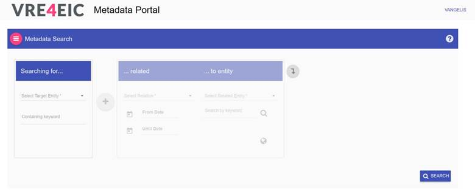
2. As soon as this is done, we can define what we are looking for through the “Select Target Entity” drop down list.
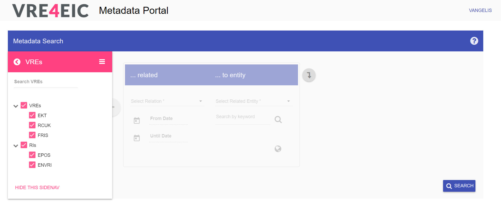
3. After selecting “target” entity, more options are enabled. One of them is that we can now enter some search keyword to be taken into account during the final search. According to the followed scenario, we enter the word “vre” in the “Containing Keyword” field. Autocomplete assistance is provided when typing keywords. To enter a keyword that is not recommended through the autocomplete service, we just press enter.
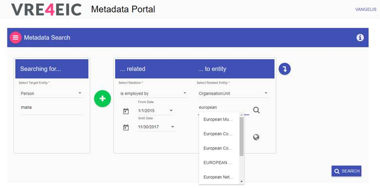
4. The general concept is that we are seeking for a target entity (something that we don’t know yet), considering that it has some relation with some other entity (we call that “related entity”). The “Related entity” and the “relation” between target end related entities, can be set through the right panel which is divided into two smaller sub-panels. Right panel becomes enabled after selecting a target entity (previous step). We can now select the relation e.g. “has author”, the time period of interest and the related entity “Person”.
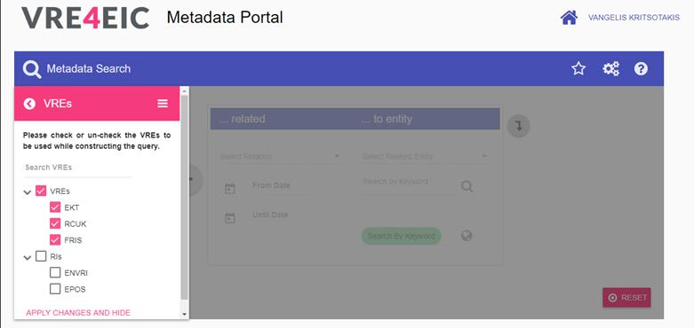
5. The system allows specifying actual instances for the related entity (“Person” in our case). To do so, we type the word “Anna” and select the respective recommended search-term from the autocomplete service. Then, we click on the “” icon and the system will search for relevant instances to display.
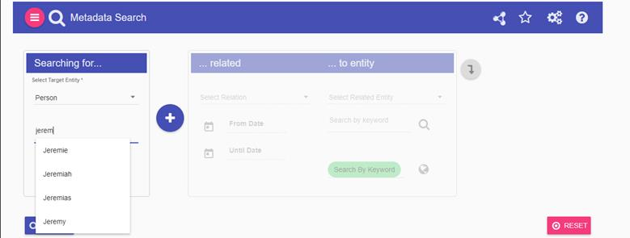
6. The results of this search appear on a separate dialog on the screen and are split in pages. We can now select individual person instances by clicking on them one by one.
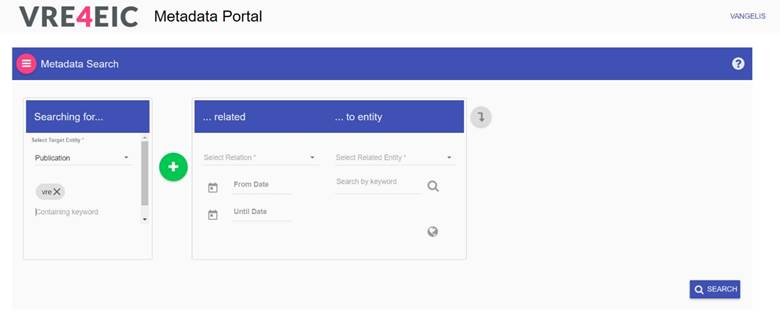
7. In our example query, since we do not know the last name of the person “Anna”, we can check the “Select All” checkbox to search in all of the results. The dialog can be closed by pressing the “Select” button (bottom left corner of the dialog).
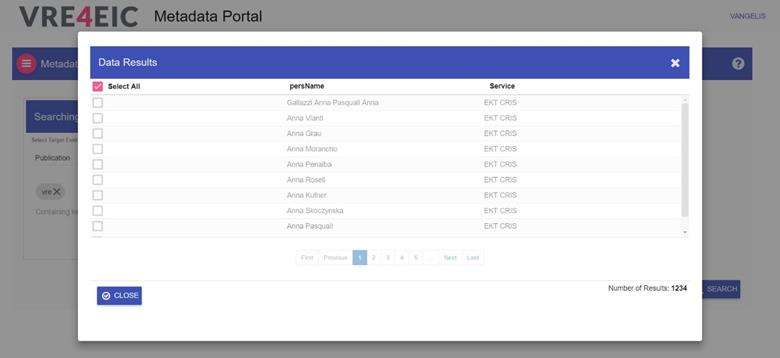
8. After closing the dialog we can see the notification “All instances selected”.
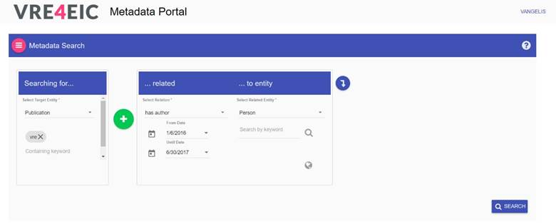
9. To continue with the scenario, we are using the UI to capture the sentence:
“This person is member of an Organization, whose name is not currently known to us, but is definitely located near Livorno in Italy”.
In order to
capture that through the UI, we add a filter on Person “Anna”. That is done by
pressing on the “ ” icon.
” icon.
In general,
to add filters on a related entity we use the “ ” icon. On the other
hand in order to add new filter on the target entity, we use the “” button and then we
either select “OR” or “AND” to define whether the new filter will be applied
uniting or intersecting the results of the target entity.
” icon. On the other
hand in order to add new filter on the target entity, we use the “” button and then we
either select “OR” or “AND” to define whether the new filter will be applied
uniting or intersecting the results of the target entity.
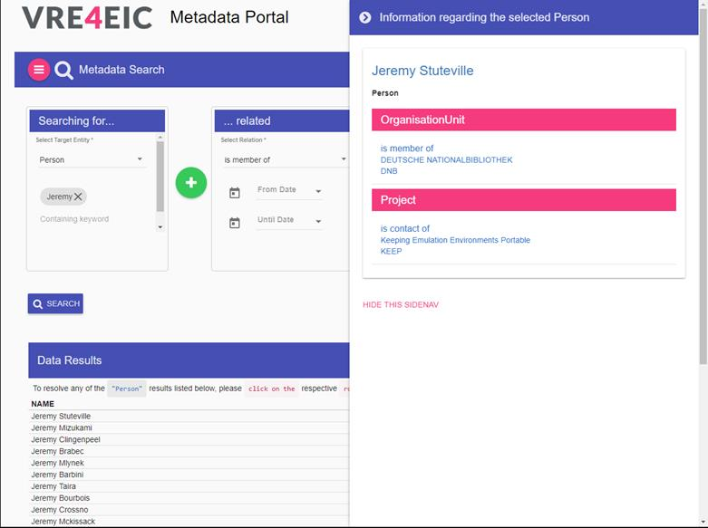
10. Now the view has been enriched with an extra UI component for the “filter – related” entity that has been just added. We can select as relation (for filter) “is member of” and as related entity (for filter) “Organization Unit”.
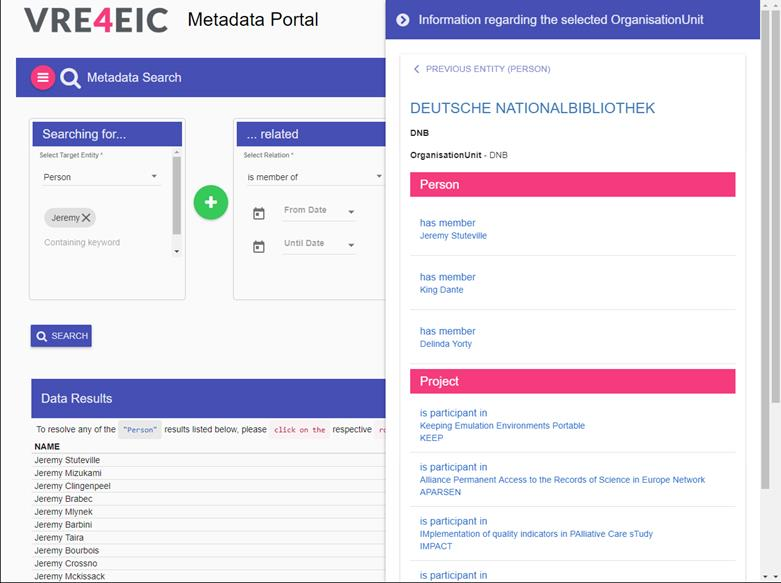
11. In case the entity has
geospatial information related to it, a map can be used for geographically
restricting the results while seeking for instances. The map is opened by
pressing on the “ ” icon and will not been available if
the geospatial information is missing (will be disabled). In our use-case we
can use the map to observe organizations located near Livorno.
” icon and will not been available if
the geospatial information is missing (will be disabled). In our use-case we
can use the map to observe organizations located near Livorno.
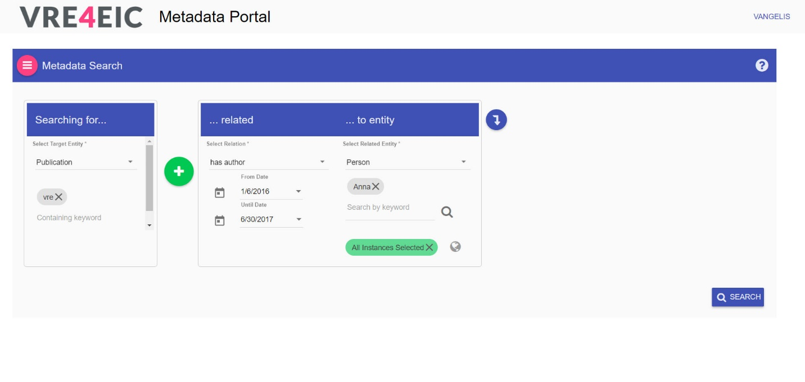
12. The region of interesting can be drown by holding the “Ctrl” key and dragging the mouse on the map, forming a rectangle. We draw a rectangle around “Livorno”.
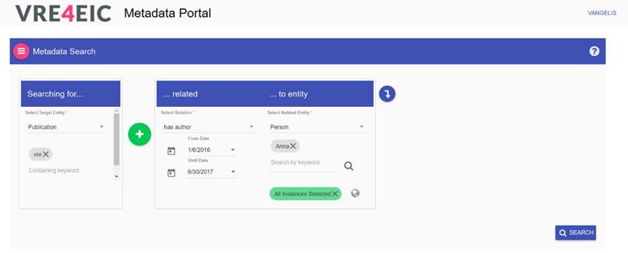
13. Dropped pins denote instances of the related entity under investigation.
(Please note that the data used for our purpose are synthetic and thus the geographical coordinates used for the pins are fictional.)
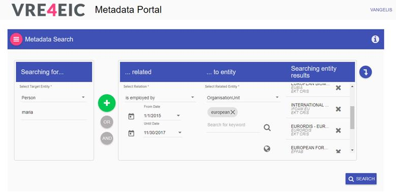
14. Hovering over a pin will reveal information about what it represents by popping a caption above it. The caption can be hidden by hovering on another pin or by clicking anywhere on the map.
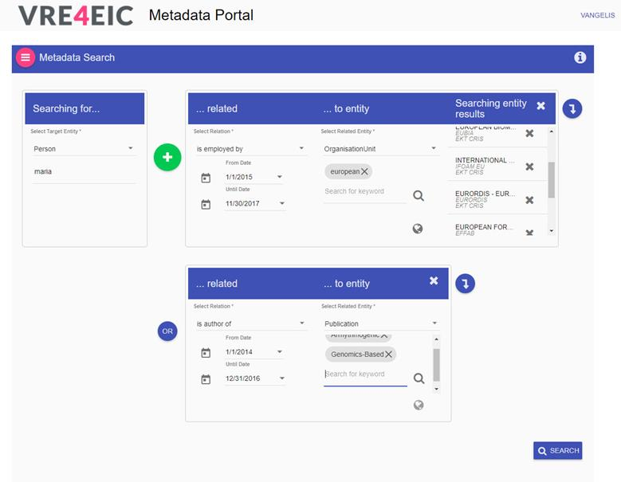
15. Selecting instances can be achieved by clicking on the pins. Clicking on a selected pin will de-select the instance. We can select one or more pins to be used as instances in our query. In our example query, we know that we are looking for organizations located around Livorno, and since there is only one pin there, we select it.
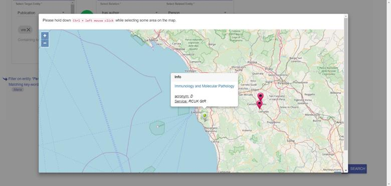
16. As soon as the desired instances have been selected, the map can be closed by clicking anywhere outside the dialog. The selected instances will appear on the right side panel in a new section. That same section can hold instances selected from the key-word search described earlier (if we have applied any).
Note that searching for instances through the map can be combined along with searching through key-words.
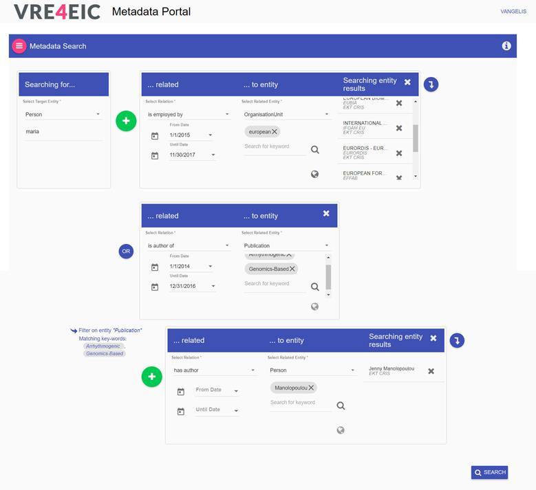
17. That’s it. Our query described on the very top of this document is now captured by the UI. The final step is to press the “Search” button located at the bottom right of the view, execute the query and get the results.
(This functionality is not yet available).